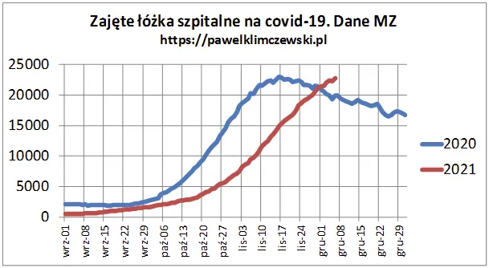
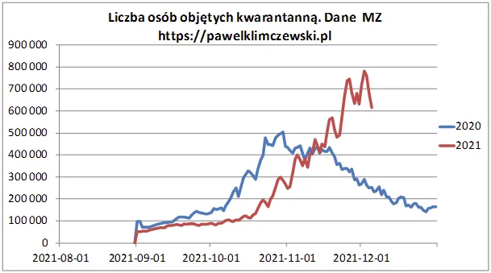

Czy idziemy na milionowy rekord “aresztowanych w domu” ?
Czy idziemy na 1 mln "aresztowanych w domu" ? Czy jesteśmy już na szczycie kwarantannowego absurdu ?
Mimo 20 milionów "szczepionych" oraz wielu milionów innych, którzy nabyli odporność w kontakcie z wirusem na pierwszej linii walki z covid kasa płynie szerokim strumieniem nowych hospitalizacji. Mam wiele doniesień, że ludzie po niegroźnym przeziębieniu nie mogą wyjść ze szpitala, mimo że czują się dobrze i by chcieli. Muszą odleżeć swoje jako zakładnicy reżimu sanitarnego. Stawki covidowe są wysokie, podatek zdrowotny wzrośnie za chwilę 9%, karuzela się rozkręca i potrwa do wiosny.

Wykres ten obnaża bezskuteczność wszelkich podejmowanych działań. Przypomnijmy, że wykresy zgonów na covid 2021 vs. 2020 też są do siebie bliźniaczo podobne, co oznacza: jest tak samo, jak było rok temu.
Mimo braku nowych formalnych obostrzeń blisko milion ludzi jest aktualnie objętych kwarantanną. Jest to bezprawna forma aresztu domowego w oparciu o bardzo mgliste poszlaki. Pani X siedziała w biurze w pokoju z panią Y, której wyszedł dodatni test, ale czuje się świetnie. W sytuacji, gdy mamy poczucie relatywnej "swobody w naszym baraku PRL bis" za naszymi ścianami coraz więcej osób jest pozbawionych wolności.

Jest oczywiste, że wpływa to fatalnie na ich stan psychiczny i stan zdrowotny generując kolejne fale najróżniejszych zachorowań.
Z drugiej strony całe armie przeziębionych, którzy nie mogą sobie pozwolić na kwarantannę, aby uniknąć testowania, leczą się "w internecie", co przy skali zjawiska skończy się tysiącami tragedii. I tu zamyka się pętla tej finansowej karuzeli. Nadzieją jest informacja, że traci dynamikę dobowy przyrost hospitalizacji oraz dobowa liczba "osób zakażonych" i jesteśmy już blisko szczytu kwarantannowego absurdu. Z kształtu wielu wykresów wnioskuję, że odpowiedź powinna nadejść w tym tygodniu.
Paweł Klimczewski